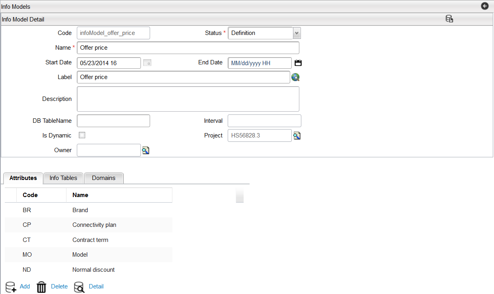

Add an Info Model
To create an info model for a standard info table, first attributes must be created. The attributes can then be added to the info model. The info model will eventually be referenced in a Catalog Rule that will be linked to a Charge Type. For example, an info model can be created for a price discount containing attributes Brand, Model, and Discount. The figure below shows an info model for a price discount containing attributes Brand, Model, and Discount. This info model defines a standard static Info Table named infomodel_price_disc. The column data values for this table are stored in the data field of the CWPC_INFOTABLE. The status of attributes must be set to Active.
To create an info model, follow these steps:
- From the menu bar, click Designer > Attribute Types menu, and create the following attributes:
- Brand and Model of type String
- Discount of type Number.
- Navigate to Designer > Info Models from the menu bar. Click the Add button to add a new Info Model.
- The Info Model Detail dialog appears.
- Enter the information in the following fields:
- Click the Save button to save the Info model. After you have saved the info model, the associated tabs appears on the Info Model Detail dialog.
- Add attributes to the info model. Refer to Attributes for Info Model for more details
- Add data to the Info Table. Refer to Info Tables more details.
- Add domains for info model. Refer to Domains for more information.
Note: Set the Status of each attribute to Active.
Field |
Description | Rules |
|---|---|---|
Code |
This is the code used to identify this Info Model. This code is not restricted to alphanumeric characters, it can also contain a combination of spaces, hyphens, etc. | Mandatory, Unique |
Status |
A list of available Status for this Info model (for example, Definition and Active). | Mandatory |
Name |
This field denotes the name of the info model. | Mandatory |
Start Date |
The effective date of this Info Model. | Optional |
End Date |
The end date of this Info Model represents the date when this Info Model is no longer effective. | Optional |
Label |
The visual Label used for this Info Model, which is used in the application user interface. This field is a translational string that supports language translations (refer to Velocity Studio's Translation Element for more details). | Mandatory |
Description |
A description of this Info Model. | Optional |
DB TableName |
A database table name. This is a string value that corresponds to the database table referenced by this Info Model. If this field is left blank, then the system will assume that the table is a Standard or Dynamic table. | Optional |
Is Dynamic |
Checking this flag results in the associated Info Table being dynamic. The name of the Dynamic Info Table matches the Info Model Code. The dynamic info table loads rows into memory only if it is needed. See Dynamic Info Tables for more information. | Boolean, Mandatory |
Interval |
Expiration interval defines how long the Dynamic Info table row can stay in the cache memory before being reloaded from the external source. The interval is specified in minutes and can have value from 0 to 30,000 or value of -1 (never expires). This field is used in conjunction with the Dynamic Tables and the Dynamic Row cache loader script to load row data into memory. If this field is left blank, the system will assume a value of -1, never expires. Note: Interval field remains disabled if the check box for Is Dynamic field is unchecked. |
Optional |
Project |
Each object is assigned to a Project. This defaults to the active or opened project when the attribute is first created. | Mandatory |
Owner |
This field indicates information about the owner of the project. | Mandatory |
Note: Leave the DB Tablename field blank and the Is Dynamic field unchecked to create a standard info table.

Info Model Application
Now that an Info Model has been created, a Catalog Rule can be created to reference that Info Model. The Catalog Rule can then be linked to a Charge Type and the Charge Type can be associated with an Item. When that item is added to a shopping basket the charge type and its associated catalog rule will be applied. The rule will then reference the info table to find the correct discount to apply. Below are the steps associated with setting up the Catalog Rule and Charge Types that reference the Info Model.
- Create the Info Model by clicking Designer > Info Model from the menu bar.

- Create a Catalog Rule by clicking Designer > Catalog Rule from the menu bar.
- Link the Rule to a Charge Type by clicking Designer > Charge Type.